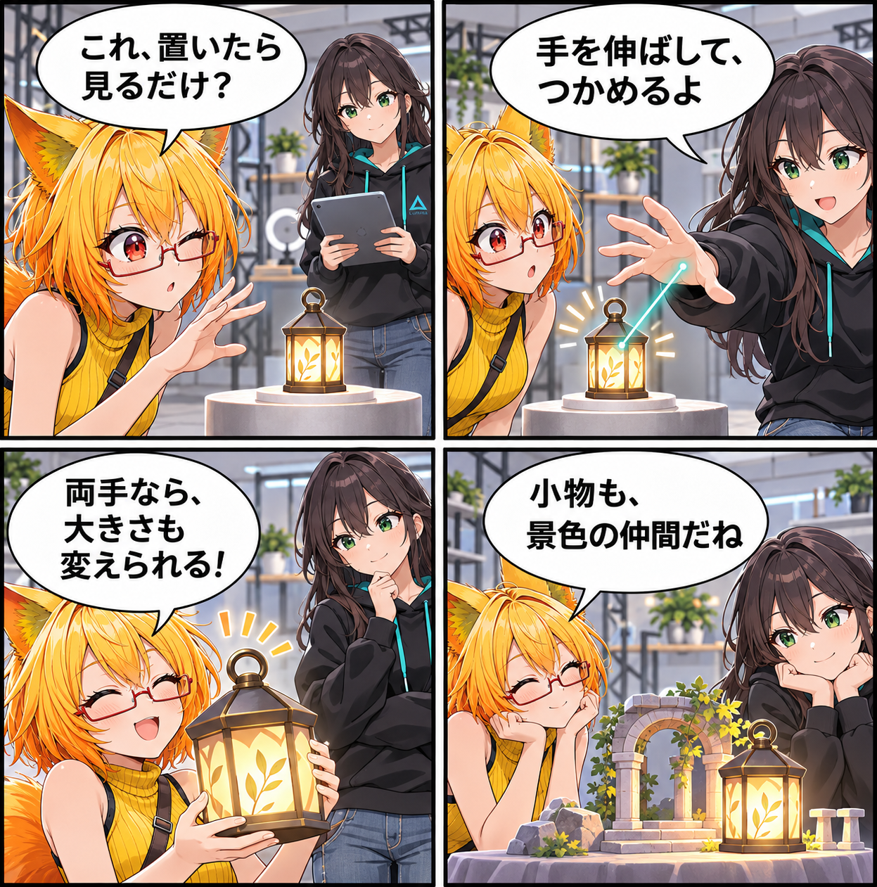

2026.11.06 / Development Log / Feature Spotlight
閑話休題：置いた小物に、手を伸ばす
新規実装の報告ではなく、VRASにすでにあるアイテム・VCIの操作を紹介する回です。置いた小物へ近づき、対象に応じて手元で扱えるようにする、スタジオの小さな入口を眺めます。
今回は feature-spotlight（機能紹介） です。集計期間は2026-11-05 03:00:00 JSTから2026-11-06 02:59:59 JSTまで、対象はViewerの
main です。集計終了時点のHEADは aa5c7bc823b013fdfc622ec1d7aa1b85c9da8e5e、期間内コミットは0件でした。MainScene.unity の未コミット差分は、期間内の実装事実として確認できないため実績には含めていません。
置くだけで終わらない小物
VRASでは、アイテムを読み込み、配置して、スタジオの中で扱えます。VR操作では、対象へ触れる操作とRayによる操作を使い分け、Grabを利用できます。対象に応じて両手での拡縮やUSE操作にも対応します。
VCIも、対応範囲で手元へ
VCIのSubItemも、対応範囲内でGrabなどの操作対象になります。VRASが扱うのはローカルでのTransform・Material・Animation・Audio・Lua等の限定された範囲です。VirtualCastの他ユーザー機能、ネットワーク同期、OSCを再現するものではありません。
4コマの話
今回は、ろひが小さな小物を前に「触れない展示品」だと思い込むところから始めます。ルミナが手を伸ばすことで、置いたものがスタジオの景色の仲間になる、という小さな発見で締めます。今日完成した機能ではなく、現在実装されている操作の紹介です。
まとめ
VRASでは、配置したアイテムや対応範囲のVCI SubItemを、VRの接触・Ray操作で扱えます。小物をただ置くだけで終わらせず、場面づくりの中で手を伸ばせることが、このスタジオの使い方を少し広げます。